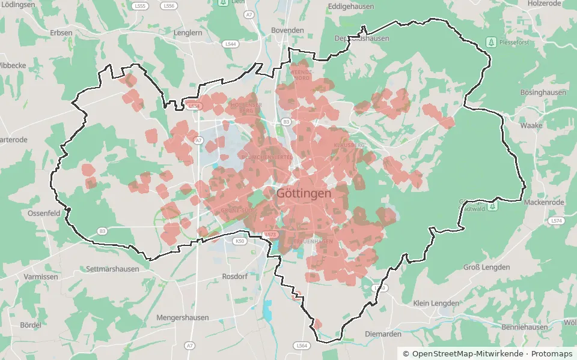
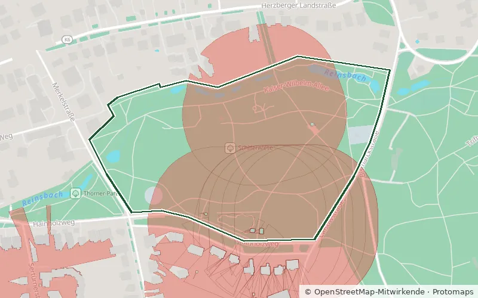
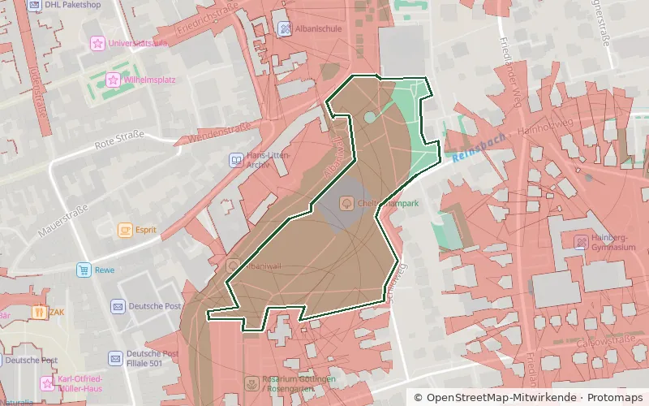
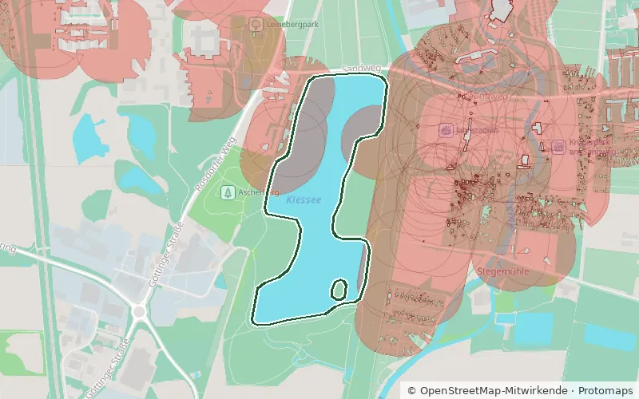
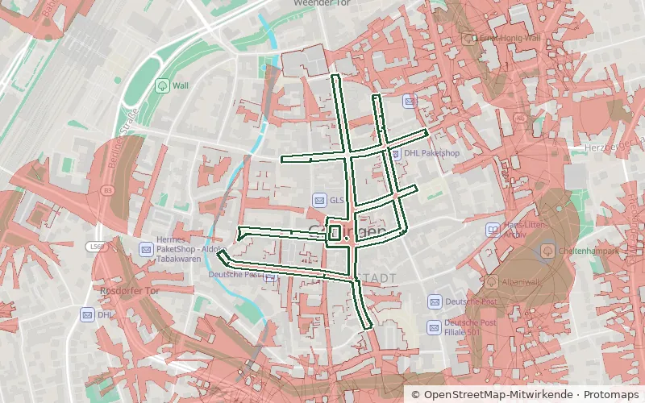
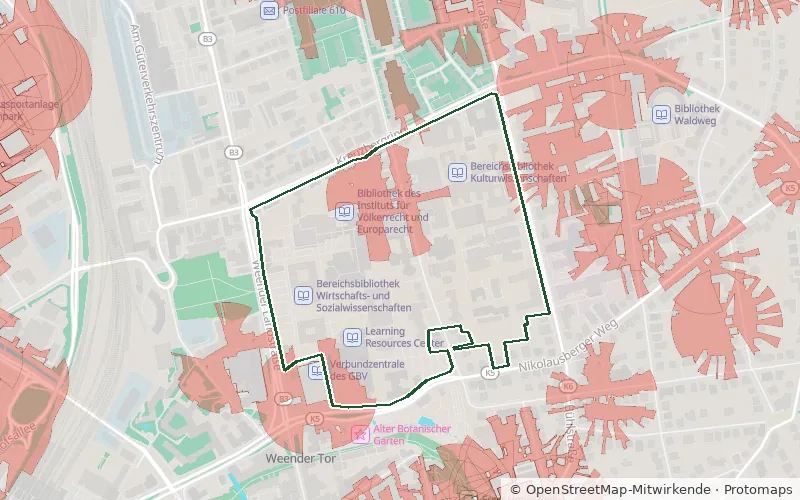

In Göttingen ist öffentliches Kiffen auf 15 km² verboten, das sind 12,5 % der Stadtfläche von 117 km². Grund sind 1 049 Einrichtungen wie Schulen und Spielplätze: In ihrer Sichtweite, bis 100 Meter vom Eingang und ohne Gebäude dazwischen, verbietet § 5 KCanG den Konsum. Dazu kommt die Fußgängerzone der Innenstadt von 7 bis 20 Uhr und überall die Gegenwart von Minderjährigen.
Ein Drittel der Stadt ist Wald (32 % der Stadtfläche), vor allem der Stadtwald im Osten, und davon liegen nur 3,6 % in einer Zone; ohne den Wald gerechnet sind es 16,8 %.

Woher die Zonen in Göttingen kommen
| Einrichtung | Anzahl | Zonenfläche |
|---|---|---|
| Schulen | 50 | 2,8 km² |
| Kitas und Kindergärten | 113 | 3,1 km² |
| Spielplätze | 314 | 5,6 km² |
| Kinder- und Jugendeinrichtungen | 35 | 0,8 km² |
| Sportstätten | 537 | 8,4 km² |
Jede Art für sich gezählt, Überlappungen also mehrfach. Anbauvereinigungen nur, soweit in OpenStreetMap eingetragen.
Die meisten Zonen gehen auf die 537 Sportstätten zurück, danach auf die 314 Spielplätze. Auf Spiel- und Bolzplätzen verbietet eine Verordnung der Stadt außerdem, zu rauchen und Alkohol zu trinken, bis zu 5.000 Euro (Verordnung über die öffentliche Sicherheit, § 5).
Schillerwiese, Cheltenhampark und Kiessee
Auf der Schillerwiese liegen 70 % der Fläche in einer Zone, um sechs Sportanlagen, darunter Tennis und Minigolf, und einen Spielplatz. Der Cheltenhampark liegt fast ganz in einer Zone (90 %): Um ihn liegen drei Schulen und zwei Kitas.


Am Kiessee liegen 31 % der Wasserfläche in einer Zone, wegen der Sportanlagen und Spielplätze am Ufer. Auf einem 100 Meter breiten Streifen Land entlang der Flüsse sind es 24 %. Kleinere Parks liegen fast ganz in einer Zone: der Levinsche Park zu 92 %, der Klosterpark zu 93 %. Im Leinepark sind es 45 %, im Stadtpark 27 %; der Stadtwald mit 1 712 ha liegt zu 3 % in einer Zone. Im Pfalz-Grona-Park sind es 41 %, im Leinebergpark 88 %.

Innenstadt
Göttingen hat eine Liste: Das Straßenverzeichnis zur Straßenreinigungsverordnung kreuzt 36 Abschnitte in der Innenstadt als Fußgängerzone an, darunter die Weender Straße zwischen Markt und Jüdenstraße, Groner Straße, Markt, Kornmarkt, Johannisstraße und Wilhelmsplatz (Straßenreinigungsverordnung). Den nördlichen Teil der Weender Straße führt es nicht als Fußgängerzone. Dort gilt von 7 bis 20 Uhr Konsumverbot; blau sind die Fußgängerbereiche aus OpenStreetMap.
Von Weender und Groner Straße liegen außerdem 57 % in einer Sichtweiten-Zone, vom Markt 88 %. Der Wilhelmsplatz liegt außerhalb (0 %); tagsüber gilt dort aber das Verbot der Fußgängerzone, ebenso auf dem Weihnachtsmarkt vor dem Alten Rathaus und um die Johanniskirche.

Universität und HAWK
Hochschulen sind nach § 5 KCanG keine Verbotsorte. Vom Zentralcampus der Universität liegen 15 % in einer Zone, wegen einer Kinderkrippe, vom Nordcampus mit den naturwissenschaftlichen Fakultäten 9 %. Die HAWK verbietet bei Hochschulveranstaltungen auf ihrem Gelände Drogen und andere berauschende Mittel (Hausordnung). Das Gelände des Deutschen Zentrums für Luft- und Raumfahrt liegt zu 27 % in einer Zone.

Was sonst noch in Göttingen gilt
Ein Verstoß gegen § 5 Abs. 2 kostet in Niedersachsen 20 bis 500 Euro, in Gegenwart von Minderjährigen 20 bis 1.000 Euro (Bußgeldkatalog Niedersachsen); zuständig ist die Stadt. Eigene Verbotszonen für Cannabis hat Göttingen nicht (Stand 27. November 2026).
Häufige Fragen zu Göttingen
Wo darf man in Göttingen kiffen?
Nach § 5 KCanG außerhalb der roten Flächen, etwa im Stadtwald (3 % in einer Zone). Nicht auf Spiel- und Bolzplätzen, tagsüber nicht in der Fußgängerzone der Innenstadt, nie in Gegenwart von Minderjährigen. Weiß heißt nicht sicher erlaubt: Hecken, Bäume und fehlende Einrichtungen kennt die Karte nicht.
Wie genau ist das?
Täglich aus OpenStreetMap gerechnet, mit Gebäuden als Sichthindernis; die Zahlen hier sind vom 27. November 2026. Eine Orientierungshilfe, keine Rechtsauskunft (wie gerechnet wird).
Fehlt eine Einrichtung? Korrekturen in OpenStreetMap stehen am Tag darauf auf der Karte; bitte nur eintragen, was es vor Ort gibt.